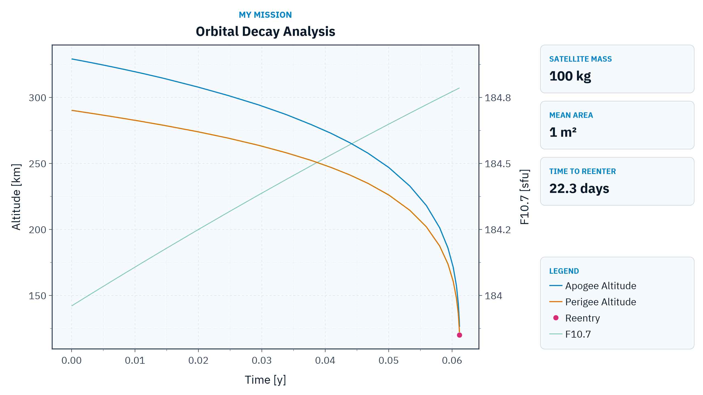

Decay Analysis
The decay analysis estimates how the orbit of a satellite evolves under perturbations until it reenters the atmosphere. This information is paramount for mission design since it provides the expected orbital lifetime, which is required, for example, by space debris mitigation regulations.
We can perform the decay analysis of a satellite using the function:
decay_analysis(orb::KeplerianElements; kwargs...) -> DataFrameIt computes the orbital decay analysis of a satellite with initial osculating mean elements orb represented in the TOD reference frame, propagating the mean orbital elements with averaged perturbations until the mean perigee altitude reaches terminate_altitude or the propagation time reaches tf.
The model averages the following perturbations over one orbit: Earth gravity zonal harmonics (including a closed-form J₂² correction), third-body attraction of the Sun and the Moon, atmospheric drag using the NRLMSISE-00 model, and solar radiation pressure gated by the Earth shadow.
This function only works after loading the package OrdinaryDiffEqAdamsBashforthMoulton.jl, which provides the default solver VCABM. Loading OrdinaryDiffEq.jl v6 also works because it depends on that package, but OrdinaryDiffEq.jl v7 or newer does not. In this case, the package OrdinaryDiffEqAdamsBashforthMoulton.jl must be loaded explicitly.
The following keywords are available:
satellite_mass::Number: Satellite mass [kg]. This keyword is required.satellite_mean_area::Number: Mean cross-sectional area [m²] used for both the atmospheric drag and the solar radiation pressure. This keyword is required.gravity_model::Union{AbstractGravityModel, Nothing}: Gravity model used to compute the Earth gravitational perturbation. If it isnothing, the system fetches and loads the EGM2008 model. (Default:nothing)num_sampling_points_per_orbit::Int: Number of sampling points used to average the perturbations over one orbit. (Default: 17)abstol::Number: Absolute tolerance of the numerical integration. (Default: 1e-6)Ap::Union{Function, Nothing, Number}: Geomagnetic index [-]. It can be a constant value or a function of time (in Julian days) that returns the geomagnetic index at that instant:(jd_utc::Number) -> Number. If it isnothing, the system uses the constant value 12, a typical long-term average of the geomagnetic activity that is suitable for decay lifetime estimation. (Default:nothing)C_d::Number: Drag coefficient [-]. (Default: 2.2)C_r::Number: Solar radiation pressure coefficient [-]. (Default: 1.25)distance_unit::Symbol: Unit of the altitude columns in the outputDataFrame. It can be:mfor meters or:kmfor kilometers. (Default::km)F107::Union{Function, Nothing, Number}: 10.7 cm solar flux index [sfu]. It can be a constant value or a function of time (in Julian days) that returns the solar flux index at that instant:(jd_utc::Number) -> Number. If it isnothing, the system uses the predicted F10.7 provided by SpaceIndices.jl (space indexF10predicted), a harmonic model fitted to the observed data that captures the mean solar cycle behavior. In this case, the required space index set is initialized automatically, downloading the coefficient file on first use. Notice that this prediction is intended for long-term analyses and must not be used as a short-term forecast of the solar activity. (Default:nothing)reltol::Number: Relative tolerance of the numerical integration. (Default: 1e-6)return_solution::Bool: Iftrue, the function also returns the raw solution of the numerical integration (seeSciMLBase.ODESolution), whose state vector is the equinoctial orbital elements[a, ψ, e_x, e_y, i_x, i_y]. (Default:false)solver: Solver from the OrdinaryDiffEq.jl ecosystem used for the numerical integration. Notice that the user must load the package that provides the selected solver (for example,Tsit5requires OrdinaryDiffEqTsit5.jl or OrdinaryDiffEq.jl). (Default:VCABM())terminate_altitude::Number: Mean perigee altitude [m] that terminates the analysis. (Default: 120e3)tf::Number: Maximum propagation time [s] after the orbit epoch. (Default:30 * 365.25 * 86400, or 30 years)time_unit::Symbol: Unit of the columntimein the outputDataFrame. It can be:sfor seconds,:mfor minutes,:hfor hours,:dfor days, or:yfor Julian years (365.25 days). (Default::y)
The function returns a DataFrame with the mean orbital element evolution during the decay with the columns:
date: Date and time of each point [UTC] encoded usingDateTime.time: Elapsed time of each point since the beginning of the analysis [time_unit].f107: 10.7 cm solar flux index used by the dynamics at each point [sfu].ap: Geomagnetic index used by the dynamics at each point [-].mean_elements: Mean Keplerian elements encoded usingKeplerianElements[SI], where the epoch is the point date [UTC].apogee_altitude: Mean apogee altitude [distance_unit].perigee_altitude: Mean perigee altitude [distance_unit].
The unit of each column is stored in the DataFrame using metadata. The DataFrame also stores the table-level metadata Satellite Mass [kg], Satellite Mean Area [m²], and Terminate Altitude [m], which is used, for example, by the function plot_decay_analysis.
The satellite lifetime can be obtained from the last row of the returned DataFrame: if the perigee altitude reached terminate_altitude before tf, the last date is the decay epoch estimation.
Examples
We will estimate the orbital lifetime of a 100 kg satellite with a mean cross-sectional area of 1 m² in a Sun-synchronous orbit with an altitude of 300 km. The first thing we need to do is define the orbit:
julia> jd₀ = date_to_jd(2024, 1, 1)2.4603105e6julia> orb = KeplerianElements( jd₀, EARTH_EQUATORIAL_RADIUS + 300e3, 0.001, 98.0 |> deg2rad, ltdn_to_raan(10.5, jd₀), 90 |> deg2rad, 0 )KeplerianElements{Float64, Float64}: Epoch : 2.46031e6 (2024-01-01T00:00:00) Semi-major axis : 6678.14 km Eccentricity : 0.001 Inclination : 98.0 ° RAAN : 77.684 ° Arg. of Perigee : 90.0 ° True Anomaly : 0.0 °
Now, we can use the function decay_analysis to obtain the orbit evolution until the reentry. Notice that we only need to provide the satellite mass and mean area: the space indices default to the predicted F10.7 and to a constant geomagnetic index of 12, and the system fetches the EGM2008 gravity model automatically:
julia> df = decay_analysis(orb; satellite_mass = 100.0, satellite_mean_area = 1.0)[ Info: Downloading the ICGEM file 'EGM2008.gfc' from 'https://icgem.gfz-potsdam.de/getmodel/gfc/c50128797a9cb62e936337c890e4425f03f0461d7329b09a8cc8561504465340/EGM2008.gfc'... [ Info: Downloading the file 'f107_prediction_coefficients.csv' from 'https://raw.githubusercontent.com/JuliaSpace/SatelliteToolboxSpaceIndexSets/refs/heads/main/files/f107_prediction_coefficients.csv'... 31×7 DataFrame Row │ date time f107 ap mean_elements ⋯ │ DateTime Float64 Float64 Float64 KeplerianEle… ⋯ ─────┼────────────────────────────────────────────────────────────────────────── 1 │ 2024-01-01T00:00:00 0.0 183.96 12.0 KeplerianElemen ⋯ 2 │ 2024-01-01T00:43:08.508 8.20249e-5 183.962 12.0 KeplerianElemen 3 │ 2024-01-01T01:23:17.995 0.000158377 183.963 12.0 KeplerianElemen 4 │ 2024-01-01T02:27:51.906 0.000281134 183.965 12.0 KeplerianElemen 5 │ 2024-01-01T04:01:31.956 0.000459222 183.967 12.0 KeplerianElemen ⋯ 6 │ 2024-01-01T15:30:57.983 0.00177003 183.987 12.0 KeplerianElemen 7 │ 2024-01-02T01:51:27.407 0.00294976 184.004 12.0 KeplerianElemen 8 │ 2024-01-02T13:35:47.392 0.0042889 184.024 12.0 KeplerianElemen ⋮ │ ⋮ ⋮ ⋮ ⋮ ⋱ 25 │ 2024-01-22T16:15:58.891 0.0593505 184.764 12.0 KeplerianElemen ⋯ 26 │ 2024-01-22T23:30:37.318 0.0601769 184.774 12.0 KeplerianElemen 27 │ 2024-01-23T03:58:42.921 0.0606866 184.78 12.0 KeplerianElemen 28 │ 2024-01-23T06:33:04.104 0.0609801 184.784 12.0 KeplerianElemen 29 │ 2024-01-23T07:53:11.161 0.0611324 184.786 12.0 KeplerianElemen ⋯ 30 │ 2024-01-23T08:14:08.100 0.0611722 184.786 12.0 KeplerianElemen 31 │ 2024-01-23T08:14:08.100 0.0611722 184.786 12.0 KeplerianElemen 3 columns and 16 rows omitted
The estimated decay epoch is the date of the last point:
julia> df[end, :date]2024-01-23T08:14:08.100
We can also provide constant space indices, which is useful, for example, to analyze worst-case scenarios with high solar activity:
julia> df_high = decay_analysis( orb; satellite_mass = 100.0, satellite_mean_area = 1.0, F107 = 250, Ap = 30 )31×7 DataFrame Row │ date time f107 ap mean_elements ⋯ │ DateTime Float64 Float64 Float64 KeplerianEle… ⋯ ─────┼────────────────────────────────────────────────────────────────────────── 1 │ 2024-01-01T00:00:00 0.0 250.0 30.0 KeplerianElemen ⋯ 2 │ 2024-01-01T00:29:43.461 5.65145e-5 250.0 30.0 KeplerianElemen 3 │ 2024-01-01T00:57:27.991 0.00010926 250.0 30.0 KeplerianElemen 4 │ 2024-01-01T01:41:43.113 0.000193396 250.0 30.0 KeplerianElemen 5 │ 2024-01-01T02:45:15.191 0.000314193 250.0 30.0 KeplerianElemen ⋯ 6 │ 2024-01-01T12:50:18.870 0.00146459 250.0 30.0 KeplerianElemen 7 │ 2024-01-01T21:54:52.181 0.00249994 250.0 30.0 KeplerianElemen 8 │ 2024-01-02T07:45:11.652 0.00362232 250.0 30.0 KeplerianElemen ⋮ │ ⋮ ⋮ ⋮ ⋮ ⋱ 25 │ 2024-01-14T15:30:51.248 0.0373619 250.0 30.0 KeplerianElemen ⋯ 26 │ 2024-01-14T22:00:58.766 0.0381036 250.0 30.0 KeplerianElemen 27 │ 2024-01-15T01:56:26.312 0.0385513 250.0 30.0 KeplerianElemen 28 │ 2024-01-15T04:17:21.410 0.0388192 250.0 30.0 KeplerianElemen 29 │ 2024-01-15T05:33:50.212 0.0389646 250.0 30.0 KeplerianElemen ⋯ 30 │ 2024-01-15T05:52:17.504 0.0389997 250.0 30.0 KeplerianElemen 31 │ 2024-01-15T05:52:17.504 0.0389997 250.0 30.0 KeplerianElemen 3 columns and 16 rows omittedjulia> df_high[end, :date]2024-01-15T05:52:17.504
Plotting
If the user loads the package Makie.jl, an extension is loaded and adds the possibility to plot the decay analysis using the function plot_decay_analysis. The figure shows the evolution of the mean apogee and perigee altitudes together with an information panel. The keyword show_f107 also plots the 10.7 cm solar flux index used by the dynamics using a twin y-axis:
using CairoMakie
fig, ax = plot_decay_analysis(df; mission_name = "My Mission", show_f107 = true)
fig